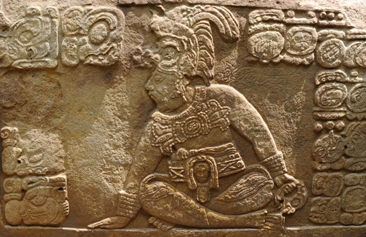

Meditation has been practiced for thousands of years and in many cultures like Indias form of meditation in the yoga practice, Buddhist meditation from through out Asia, to even Native American traditions that can be seen in the stone carvings left from hundreds of years by the Mayas. Today meditation continues to be practiced and is more commonly known as a Asian practice, that helps us Westerners deal with our busy lives, in which we forget to do the most important thing to our human existence, how to breathe correctly. People meditate for different reasons and report that it helps them improve concentration, be more relaxed, and improved their health and helping them understand their inner self. Even academic University courses taught in Stanford University by Kelly McGonigal Ph.d. recommend meditation as away to improve self-control and willpower to achieve ones goals. Meditation can help us all whether, it be to be happier, less stresses or getting better sleep, meditation can help improve our lives and make us better persons.
Even though most meditation is considered a sitting exercise, people who practice Yoga and Tia Chi also consider these practices a form of active meditation. To put the shift in perspective of sitting meditation towards active meditation, during a ancient times in China, the monks who sat and meditated only in the monasteries became weak and where encouraged to exercise to be healthier. Buddhist monks learned martial arts to defend themselves and their monasteries during the “Warring States Period” in China and meditation became intertwined with martial arts ever since then. In India, Yoga’s active tradition is also part of the meditation practice that gave birth to Buddhism via Siddhartha Gautama. Yoga, Tai Chi and other martial arts that today are practiced, are meant to be practiced together in meditation postures and movements, like the infinite stance,in Tai Chi and the warrior pose in Yoga. The Complete Book of Tai Chi Chuan, by Kiew Kit Wong, is a good book to read if interested in learning Tai Chi and the connection to meditation in motion.
There are many ways to learn how to meditate you can join a community and practice in a group or can meditate on your own. If starting on your own, find a quiet place in at home, at work, at a park or any comfortable safe place you find that is quiet. Focus on the breath and how it goes in and out of our body. Take deep breaths, calming and trying to empty the mind by not thinking of anything but the breath and keeping the gaze focused on a single spot. The sessions can last a few 5-10 minutes for beginners and move to 15 to 30 minutes, as you get better over time. For a guided meditation the Aura Application is a great tool for starters. If sitting meditation does not sound like something you may want to practice, meditation in slow motion may be for you while staying active it helps you calm the mind and relax while staying active and healthy. To find a local meditation community click here. Meditation does not have to be a solitary practice and finding a community to practice with can help and strengthen the practice.
